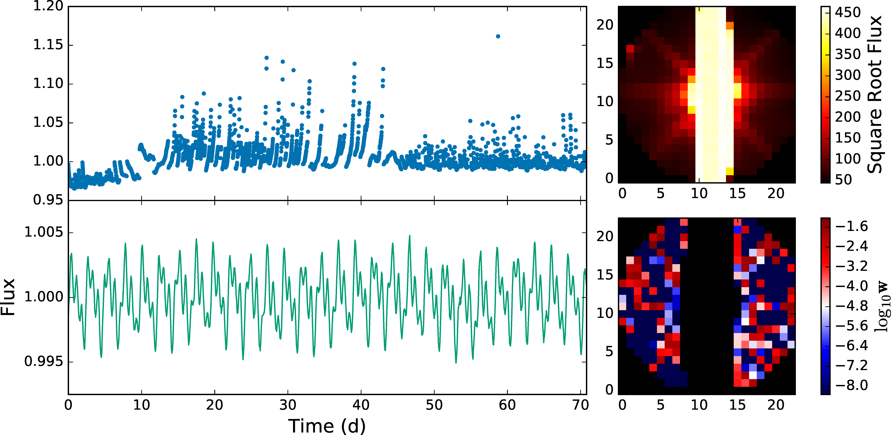
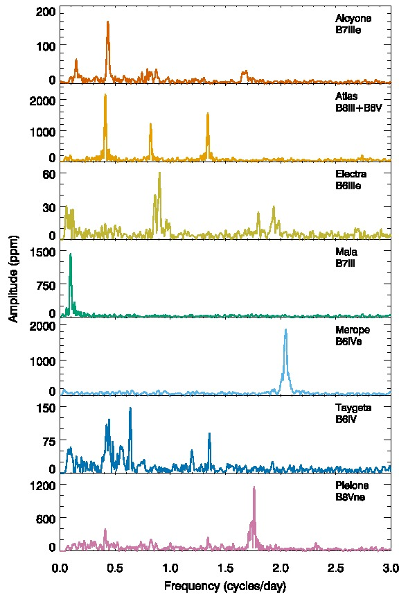
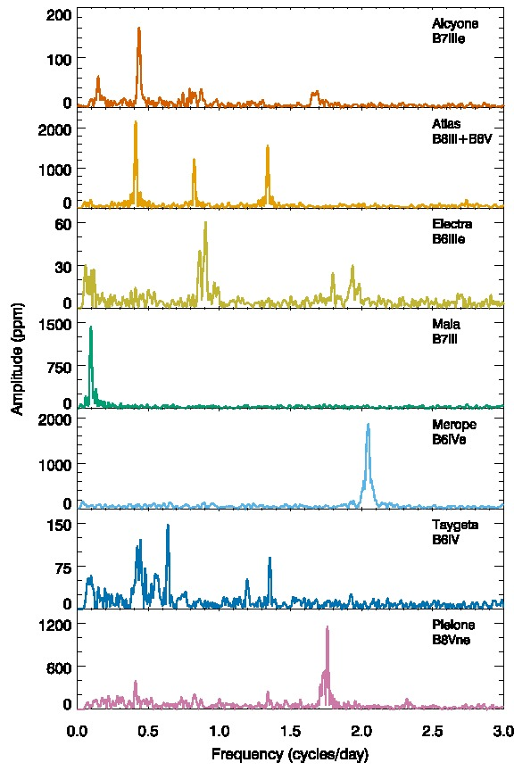
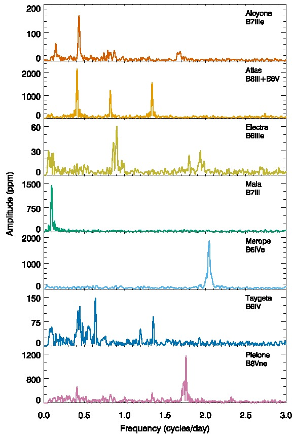

My Sagan Fellowship project is to look for planets transiting naked-eye stars (V mag < 6.5) in order to find these golden worlds for characterization with JWST.
Large searches for exoplanets like the Kepler mission have shown them to be common in our Galaxy -- now we want to learn about their atmospheres and compositions. The best options are those around bright stars, like 55 Cnc e.
Kepler can't look at bright stars easily, but with collaborators we have found ways around this. I will use these new techniques to find planets around bright stars in K2 and TESS.

Atlas lightcurve: raw (top) and halo (bottom)
White, Pope et al., 2017

All Seven Bright Pleiades
White, Pope et al., 2017
Kepler's camera has the same 'smear' streaks as in this video
You can use this smear data to do photometry of stars that are otherwise too bright!
 
